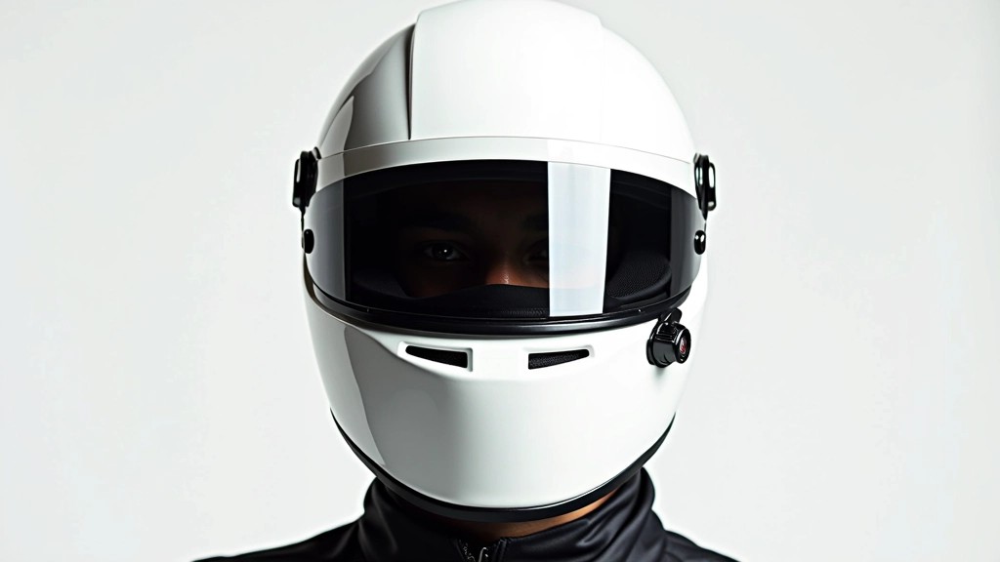
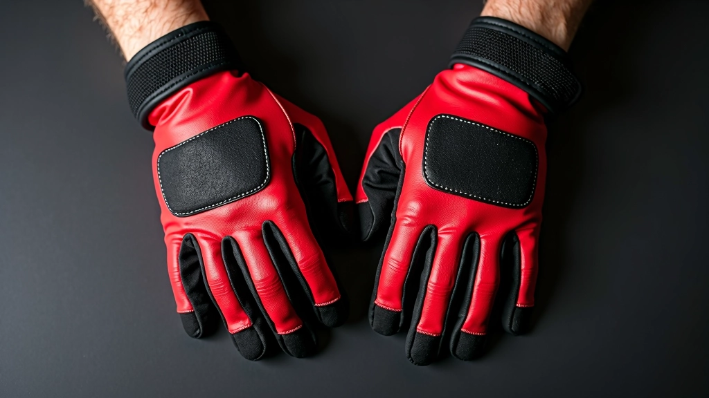
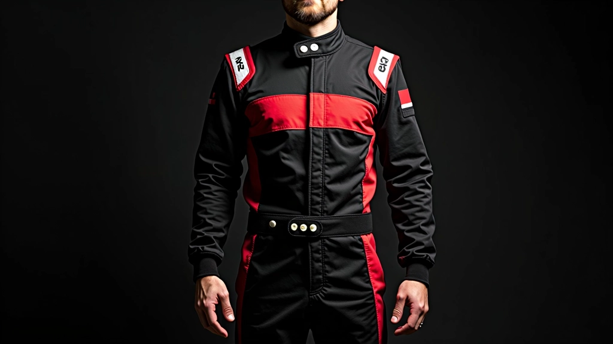
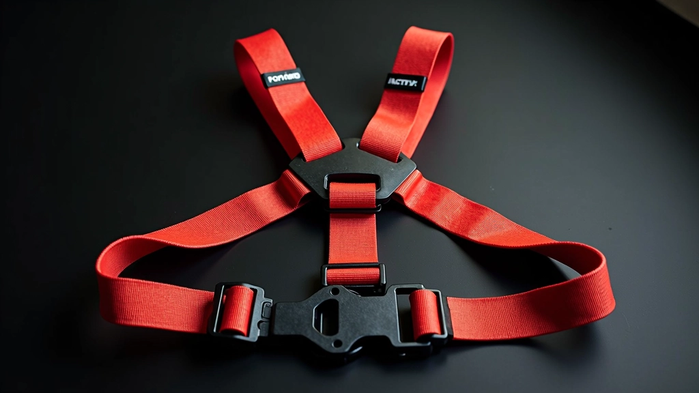

دليل البدء في سباقات الكارتينج الاحترافية
تعرف على أساسيات القيادة الآمنة والتقنيات الصحيحة للمتسابقين الجدد. يغطي هذا الدليل كل ما تحتاج معرفته قبل السباق الأول.
دليل شامل لاختيار معدات الحماية والقيادة المناسبة لتجربة سباق آمنة وفعّالة

المعدات ليست مجرد إكسسوارات — هي خط دفاعك الأول. عندما تركب كارتينج بسرعة عالية، يحتاج جسمك إلى حماية حقيقية. لا تختر المعدات بناءً على المظهر وحسب. اختر بناءً على السلامة والأداء والراحة.
معظم السائقين الجدد يخطئون في الاستثمار في المعدات. يشترون خوذة رخيصة أو قفازات لا توفر قبضة جيدة. النتيجة؟ أداء أقل وراحة منخفضة. سنساعدك على تجنب هذه الأخطاء.
الخوذة هي أهم معدة لديك. رأسك يحتاج أفضل حماية. لا تتفاوض على جودة الخوذة.
ابحث عن خوذة معتمدة من معايير دولية (ECE أو Snell). تأكد من أنها تناسب رأسك بشكل محكم — يجب أن تكون آمنة دون أن تكون مؤلمة. جرب الخوذة قبل الشراء. ارتدها لمدة دقيقة أو دقيقتين. هل تشعر بضغط على جبينك أو الجانبين؟ انتقل إلى حجم مختلف.
اختر خوذة ذات تهوية جيدة. ستقضي وقتاً طويلاً في السيارة والحرارة تتراكم بسرعة. الخوذات الحديثة لها فتحات تهوية تحافظ على رأسك بارداً.
استثمر في خوذة جيدة الآن. ستستخدمها لسنوات. تكلفة الخوذة الجيدة (200-400 درهم) أقل بكثير من تكلفة الإصابة.


يديك هي التحكم الأساسي لديك. القفازات السيئة تعني قبضة ضعيفة وأداء منخفضة.
اختر قفازات مصنوعة من جلد طبيعي أو مواد تركيبية عالية الجودة. تجنب القفازات الرخيصة من الأقمشة العادية — تنزلق بسرعة عندما تتعرق. القفازات الجيدة لها نقوش على راحة اليد توفر قبضة ثابتة حتى عندما تكون يدك رطبة.
الحجم مهم جداً. القفازات الضيقة جداً تقيد الدورة الدموية. القفازات الفضفاضة تنزلق. ارتد القفازات واضغط قبضة. يجب أن تشعر محكمة لكن ليست مؤلمة. يجب أن تكون قادراً على تحريك أصابعك بسهولة.
مواد عالية الجودة (جلد أو تركيب متقدم)
نقوش قبضة على الراحة والأصابع
حجم مناسب بدون ضغط أو فضفاضة
ستقضي ساعات في السيارة. الراحة ليست رفاهية — إنها ضرورية للأداء.
اختر بدلة سباق مصنوعة من نسيج قابل للتنفس. البدلات الكثيفة جداً تحتفظ بالحرارة والرطوبة. ستشعر بالاختناق بعد 15 دقيقة. ابحث عن بدل بها فتحات تهوية أو مصنوعة من مواد شبكية في الجزء الخلفي.
الأحذية متخصصة لسبب. أحذية سباق الكارتينج لها نعل رقيق توفر حساسية أفضل للدواسات. ستشعر برد فعل الفرامل والتسارع بشكل أفضل. الأحذية العادية سميكة جداً — لا يمكنك التحكم الدقيق.


حزام الأمان يثبتك في المقعد. عندما تدخل منحنى سريع أو تتسارع، تحتاج إلى البقاء في مكانك.
معظم حلبات الكارتينج توفر الحزام — لكن من الجيد أن يكون لديك حزامك الخاص. ابحث عن حزام متعدد النقاط (4 أو 5 نقاط). هذا يوزع الضغط على جسمك بشكل متساوي. الأحزمة البسيطة ذات النقطتين ليست آمنة كما يجب.
الملحقات الأخرى مهمة أيضاً. تحتاج إلى حزام خصر لدعم أسفل ظهرك — خاصة في السباقات الطويلة. بعض السائقين يستخدمون وسادات كوع وركبة إضافية. إذا كان لديك سباق طويل أو إذا كنت جديداً، هذه الحماية الإضافية توفر الثقة.
ارتد الحزام بشكل محكم — يجب أن تشعر بالدعم لكن لا يجب أن يقيد التنفس
تحقق من أن كل نقاط الربط محكمة وآمنة
اختبر الحزام في السيارة قبل السباق — حرك جسمك جنباً إلى جنب
تأكد من أن الحزام لا ينزلق أثناء التسارع السريع
المعدات الجيدة لا تحسن الأداء فقط — تحافظ على سلامتك. عندما تثق في معدتك، تركز على السباق وليس على القلق.
لا تبدأ برخيص ثم ترقّي لاحقاً. ابدأ بمعدات جيدة من البداية. ستجد أن الفرق في الأداء والراحة كبير جداً. بعد سباقك الأول مع المعدات المناسبة، ستفهم لماذا يهتم السائقون المحترفون بهذا كثيراً.
تذكر: المعدات الجيدة تستمر سنوات. إنها استثمار في مستقبلك كسائق.
اجمع معدتك وانطلق إلى الحلبة. اكتشف ما يمكنك تحقيقه عندما تكون محمياً بشكل صحيح.
اقرأ دليل البدء الكاملهذا الدليل مقدم لأغراض تعليمية وإعلامية فقط. المعايير والمتطلبات قد تختلف حسب الحلبة والسباق والبطولة. تحقق دائماً من متطلبات الحلبة المحددة قبل حضور السباق. استشر المدربين والمتخصصين للحصول على نصائح شخصية مناسبة لوضعك الخاص.

فريق التحرير والمراجعة
كتبه فريق تحرير سرعة الحلبة، متخصصون في تقديم معلومات دقيقة وسهلة الفهم عن دوري الكارتينج والعضويات.
تعرف على أساسيات القيادة الآمنة والتقنيات الصحيحة للمتسابقين الجدد. يغطي هذا الدليل كل ما تحتاج معرفته قبل السباق الأول.

استكشف الخيارات المختلفة للعضوية والمميزات التي يحصل عليها الأعضاء. اختر البرنامج المناسب لك.

تابع جدول البطولات والفعاليات المهمة طوال العام. احصل على معلومات عن التسجيل والمشاركة.